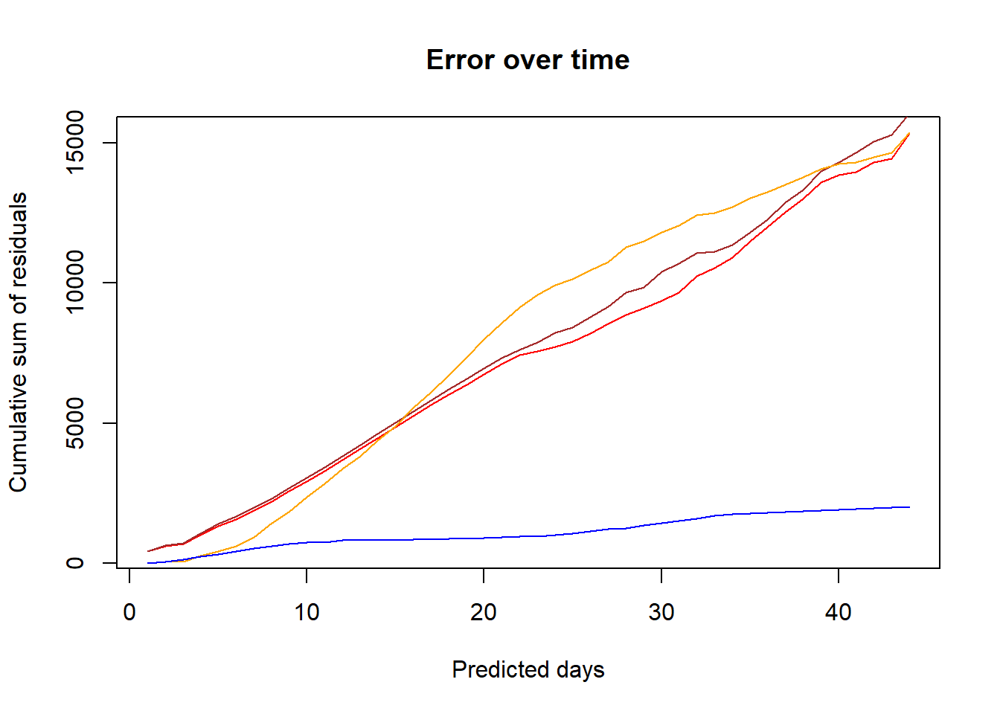
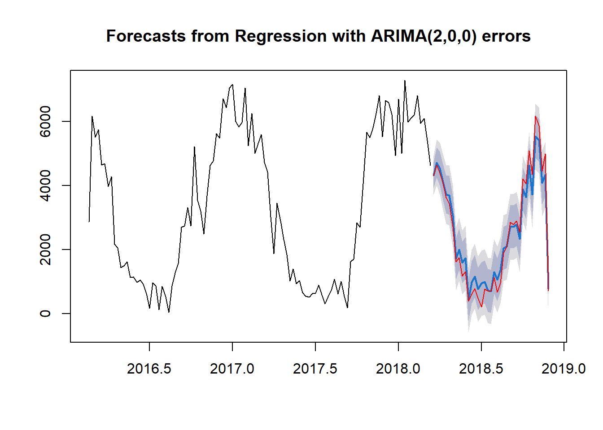
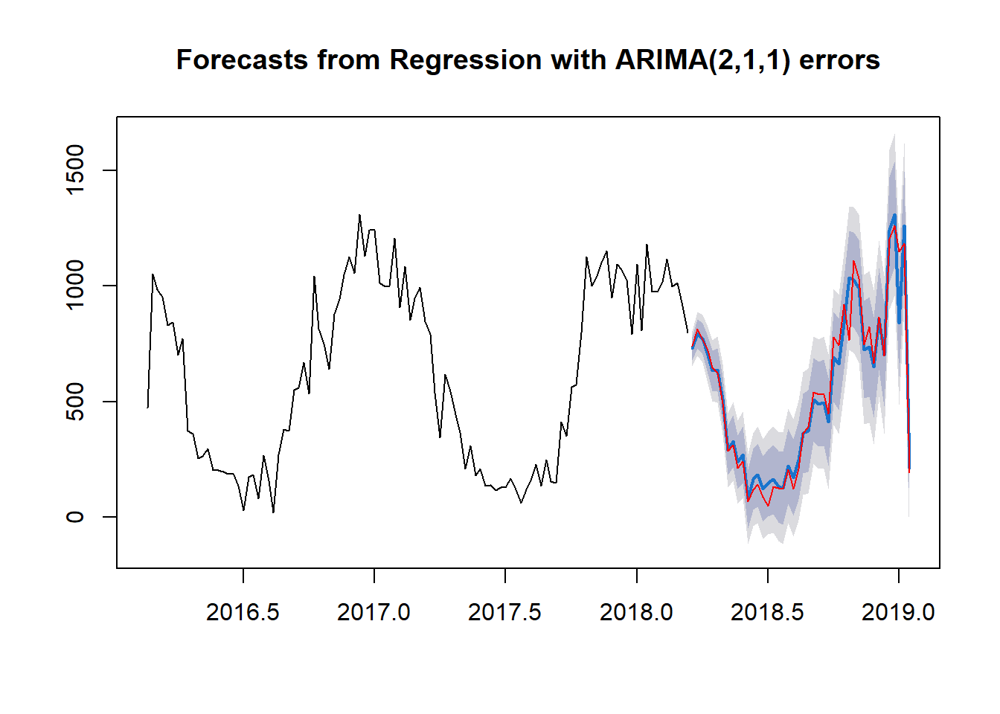

4 Results and conclusion
Plot cumulative sum of the residuals
4.1 Plot residuals of all models for building 2
# from naive forecast
plot(cumsum(abs(forecast(arima_basic, h=52)$mean - testing_b2[,"energy"])),
type="l", col="red",
ylab="Cumulative sum of residuals",
xlab="Predicted days",
main="Error over time")
# from holt
lines(cumsum(abs(forecast(building_2_ts.fc, h=52)$mean - testing_b2[,"energy"])),type="l", col="brown")
# from sarima
lines(cumsum(abs(sarima_forecast$pred -testing_b2[,"energy"])),type="l", col="orange")
# from arima with xregs
lines(cumsum(abs(forecast(arima_b2, xreg=testing_b2[,c("sun", "sunHour", "uvIndex", "cloudcover")])$mean -testing_b2[,"energy"])),type="l", col="blue")
Arima model with external regressors shows the best prediction of energy on building 2. Therefore, we decide to use this model for buildings 5 and 8 as well.
Here are the final models for buildings 5 and 8, using Arima with external regressors.
4.2 Forecast for other buildings
Arima for building 5:
arima_b5 <- auto.arima(training_b5[,"energy"], xreg=training_b5[,c("sun","sunHour", "uvIndex", "cloudcover")])
plot(forecast(arima_b5, xreg=testing_b5[,c("sun", "sunHour", "uvIndex", "cloudcover")]))
lines(testing_b5[,"energy"], col="red")
Arima for building 8:
arima_b8 <- auto.arima(training_b8[,"energy"], xreg=training_b8[,c("sun","sunHour", "uvIndex", "cloudcover")])
plot(forecast(arima_b8, xreg=testing_b8[,c("sun", "sunHour", "uvIndex", "cloudcover")]))
lines(testing_b8[,"energy"], col="red")
The prediction is quite accurate on the other buildings as well.
4.3 Summary
Our business objectives have been met, we have explored different models that can be used for forecasting. We have assessed their performance via plotting the difference between the real values and the predicted values (residuals) over time. The model which had the lowest error over time performed the best. Therefore, we can conclude that the arima model performs the best when external regressors are also added.